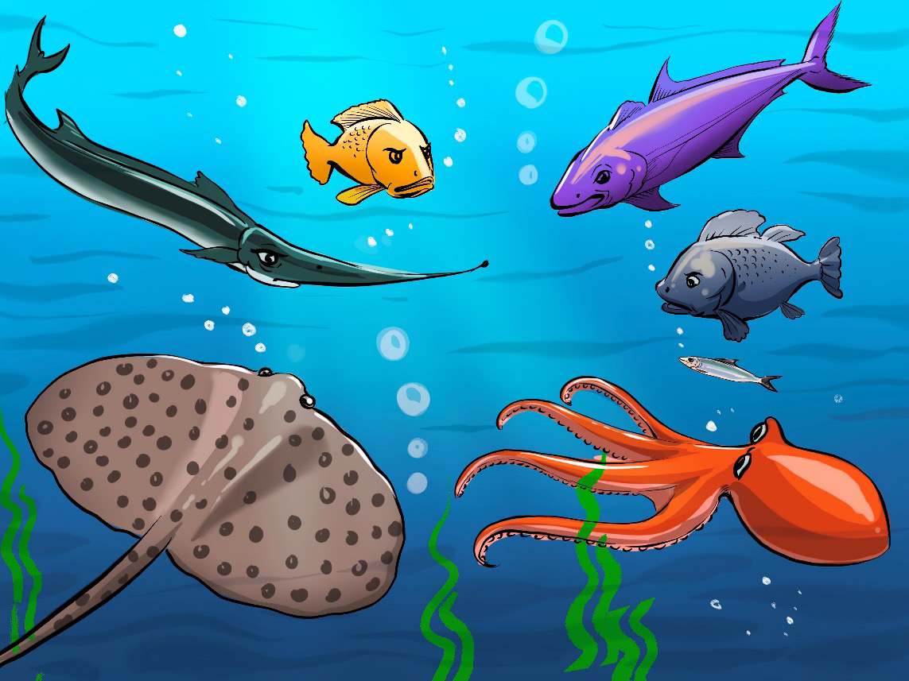

Mkutano uliendelea kwa saa kadhaa na, mwishowe, waliamua kupanga mikakati ya kujilinda. Walijadili kutumia njia za kijanja kama kujificha kwenye miamba na magugu ya baharini ili kuepuka nyavu za Binadamu. Isitoshe, waliamua kuwafundisha watoto wao mbinu za kuepuka hatari.
Bwana Pweza aliongoza msafara wa kwenda kumwona Nyangumi Mkuu, kiongozi wa nyangumi wote katika bahari hiyo. Walipofika, walieleza shida yao na kumwomba msaada. Nyangumi Mkuu alisikiliza kwa makini kisha akasema, “Lahaula lakwata! Binadamu huyu ni tishio kubwa kwetu sote. Tutawasaidia kwa kuwinda mashua zake na kuzivunja ili asiweze kutuvua tena.” Pamoja na hayo, waliamua kumtafuta Papa, ambaye naye ni mahiri wa vita vya majini. Papa alishirikiana bega kwa bega na Nyangumi anayejulikana kwa uwezo wake wa kuwasiliana na viumbe wengine wa baharini kupitia mawimbi. Nyangumi alikubali kusaidia na kuanza kutuma mawimbi ya sauti kuonya viumbe wote kuhusu binadamu huyo hatari. Kutokana na juhudi za pamoja, samaki walianza kuona